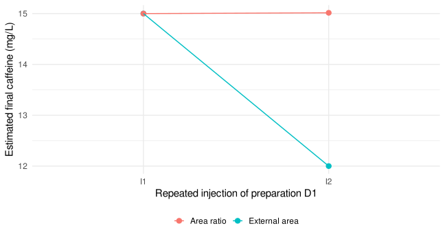

library(readr)
library(dplyr)
library(ggplot2)
standards <- read_csv("data/course/hplc-standards.csv", show_col_types = FALSE)
fit_external <- lm(caffeine_area ~ caffeine_mg_l, data = standards)
coef(fit_external)GC and HPLC
Choose an introduction and separation, then calibrate peak area
Interactive experiment
Explore the browser demo: When does an internal-standard ratio cancel a shared error, and when does it fail? Predict first, change one condition, then explain the result. Export a CSV to reproduce one calculation or plot in R.
Choose how the analyte can enter and move
Gas chromatography carries a vapour in a gas; liquid chromatography carries solute in a liquid. Both use differential interaction with a stationary phase, then detect the arriving components. Method choice must account for sample introduction, stability, selectivity, matrix and detection, not just whether a column is available.

Conventional GC suits analytes that can enter the gas phase and tolerate the relevant introduction and separation conditions. Headspace can introduce volatile components above a complex sample; the entire matrix need not be volatile. Temperature programming changes retention over a run. Stationary phase chemistry also matters: boiling point alone does not define retention. Agilent introduction to headspace sampling

HPLC can accommodate many analytes unsuited to ordinary GC, provided they are soluble and stable under the chosen conditions. In reversed-phase HPLC a relatively nonpolar stationary phase interacts with solutes in a more polar mobile phase. Increasing organic modifier often reduces retention of suitably retained compounds, but ionisation, solvent choice and analyte chemistry affect the actual behaviour.
A program belongs to a complete method
An isocratic LC run keeps mobile-phase composition fixed. A gradient changes composition during the run. The supplied illustrative program begins at 10% organic, rises to 70%, holds, then returns to 10% and re-equilibrates before the next injection. It is not a validated caffeine method or a pump setup instruction.

Flow, column, temperature, injection solvent and detector settings also belong to the method. Changing them can alter retention or response. A retention-time comparison made under a different method is not a controlled identification comparison.
A flame-ionisation detector measures an ion-current response useful for many organic compounds in GC. A UV detector measures absorbance for compounds that absorb at the chosen wavelength. MS records ions separated by mass-to-charge. These responses differ in selectivity and response factors. A chromatographic area is not a universal count of molecules.
Calibrate integrated caffeine peak area
The simulated HPLC standards have known caffeine concentration in the final solution. Peak areas are supplied from integration, not calculated by counting CSV rows. Assume adequate separation, an appropriate baseline, and a linear response over 0–40 mg/L for this example.

The fitted relationship is area = 3 + 50 × concentration. Area depends on the introduced analyte amount and detector response. If an injection introduces less of the same solution, an external-area calibration can give a different estimated concentration even though the vial concentration did not change.
Use an internal standard for a specific shared effect
An internal standard is a distinguishable compound added in known amount. In this exercise every final standard and sample has 10 mg/L internal standard. Assume resolved peaks and sufficiently similar responses to a shared injection variation. Calibrate the analyte/internal-standard area ratio against analyte concentration under that fixed internal-standard concentration.

standards <- standards |>
mutate(area_ratio = caffeine_area / internal_standard_area)
fit_ratio <- lm(area_ratio ~ caffeine_mg_l, data = standards)
injections <- read_csv("data/course/hplc-injections.csv", show_col_types = FALSE) |>
mutate(area_ratio = caffeine_area / internal_standard_area,
final_external_mg_l = (caffeine_area - coef(fit_external)[1]) /
coef(fit_external)[2],
final_ratio_mg_l = (area_ratio - coef(fit_ratio)[1]) /
coef(fit_ratio)[2])
injections |> select(injection_id, preparation_id, final_external_mg_l,
final_ratio_mg_l)
I1 and I2 are repeated injections of D1. External-area estimates are 15.00 and 12.00 mg/L. Area-ratio estimates are 15.000 and 15.015 mg/L: a shared injection effect has mostly cancelled. The small difference remains because the simulated signals include a response offset. This is useful compensation, not exact invariance under every error.

An internal standard cannot repair analyte extraction loss that occurred before it was added. It also cannot resolve overlapping peaks or cancel an effect that changes analyte and standard differently. If its concentration differs between standards and samples, this simple ratio-versus-concentration calibration needs a different concentration-ratio model. Manufacturer discussion of calibration approaches
Guard results with separation, QC and range evidence
results <- injections |>
mutate(in_range = final_ratio_mg_l >= 0 & final_ratio_mg_l <= 40,
reportable = resolved & qc_pass & in_range,
original_mg_l = if_else(reportable,
final_ratio_mg_l * dilution_factor, NA_real_))
results |> select(injection_id, preparation_id, original_mg_l, reportable)
write_csv(results, "output/hplc-results.csv", na = "NA")The accepted D1 preparation gives about 150 mg/L in the supplied drink after its tenfold dilution. I3’s candidate caffeine peak is not resolved; I4 belongs to a failed QC condition. Both have withheld concentration results despite algebraically calculable ratios. The supplied flags represent decisions from the exercise’s separation and QC evidence; in real work they must come from records, not convenient booleans assigned after seeing an answer.
Practical and transfer
Compare GC and HPLC for a volatile solvent mixture and an aqueous mixture of nonvolatile, heat-sensitive compounds. Explain how matrix and detector choice could change your answer. Report external and internal-standard estimates for D1, while distinguishing a repeated injection from a new preparation.
For transfer, a new accepted injection has caffeine area 903, internal-standard area 600, internal-standard concentration 10 mg/L and dilution factor 5. Use the fitted ratio model to estimate the original concentration. Would you use that answer if its caffeine peak overlapped a matrix peak?
Numerical and decision checks
The ratio is 1.505 and the fitted ratio relation is \(R=0.006+0.100c\). Final caffeine is 14.99 mg/L, giving 74.95 mg/L original. An unresolved contributing matrix peak invalidates that simple analyte-area interpretation; the ratio is not a cure for coelution.
Selected Harris and Lucy reading: gas and liquid chromatography. Read by topic; the planned course edition is not yet confirmed.
Slides · Course project · R reference
Previous: Separation principles · Next: Choosing and defending a result